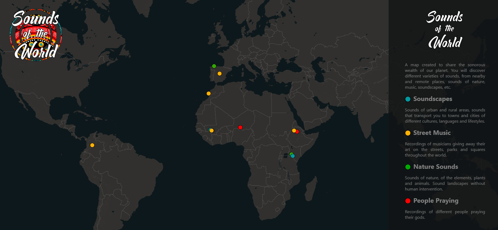

b1tdreamer
Latest Projects
Nature mapping
Legend has it that in the Asturian forests the spirits of the forest manifest themselves through mushrooms in patterns of light and color.
A proyection mapping instalation in the northen forests of Spain.
Planum et Lumen
Installation for the LuzMadrid Festival
Artistic Design: Maxi Gilbert
Original Music: Olivier Arson
Interactivity: Fernando Fernandez Sanchez
Mycelium
An audiovisual trip mixing organic instruments, analog and digital electronics.
The concept consists of the interrelation of these instruments that influence each other, in the same way that the mycelium of the mushrooms serves as a subway communication network in the forests.
Speculative Fiction Landscapes
Animated landscapes created with 1.4 and 1.5 version of stable diffusion model. Sound design with Sonic Pi and Ableton
Sounds of the World
A map created to share the sonorous wealth of our planet.
You will discover different varieties of sounds, from nearby and remote places, sounds of nature, music, soundscapes, etc.
MolinoLab
A place to create and develop projects, related to organic agriculture, self-construction, arts, technologies, energy, nature, music, etc.
A community of people interested in self-sufficiency and willing to work for it.

Live Coding Sessions
Creating music and reactive visuals using algorithms and programming languages.
Looped memories
Short video projects designed to be played over and over again.
Mind Dance - La danza de la mente
Kinetic sculpture suspended with recycled speakers as a planetary system. The sounds and movements of these objects will be defined by muscular and brain sensors.
The participant is invited to activate this sculpture with his own thoughts and movements reinterpreted by the designed system.
The speakers reproduce sounds from the interior of the human body mixed with different music creations.
Save the space cats
Processing, P5JS game for the interactive wall of Medialab Prado, Madrid. Created to commemorate the Processing Community Day.
EcoRoboTotem
Poetic Robotic Sculpture built with electrical and electronic waste. Project developed within the call for #Interactivos18 of Medialab Prado, Madrid.
Interactive Wall
Matrix inspired interactive wall based on processing and kinekt allows people to encript themselves in a digital environment and transform the wall reality.
Video Mapping EVA
Old fruit and vegetable market in Madrid now converted in an open and selfmanaged space for neighbourgs.
Skills
- Audio Editing ◉ ◉ ◉ ◉ ◉
- Video Editing ◉ ◉ ◉ ◉ ◉
- Video Mapping ◉ ◉ ◉ ◉ ◉
- AR dev ◉ ◉ ◉ ◉ ◉
- AI usage ◉ ◉ ◉ ◉ ◉
- 3D modeling ◉ ◉ ◉ ◉ ◉
- Hardware hacking ◉ ◉ ◉ ◉ ◉
- HTML5 & CSS3 ◉ ◉ ◉ ◉ ◉
- Javascript ◉ ◉ ◉ ◉ ◉
- PHP ◉ ◉ ◉ ◉ ◉
- Processing ◉ ◉ ◉ ◉ ◉
- Python ◉ ◉ ◉ ◉ ◉
- Bash ◉ ◉ ◉ ◉ ◉
- Ruby ◉ ◉ ◉ ◉ ◉
Collectives
Interactivas
Horizontally and openly managed space-time group working on interactive and responsive performances and installations using tools such as Processing, Arduino, Openframeworks among others.
MolinoLab
Experimental music, performing arts, visual arts, technology, art, interactive installations, permaculture, nature, self-sufficiency.
Live Code Mad
Collective of experimentation and sound creation through different technologies such as live programming, algorithms and artificial intelligences.
Collective Mind
Multimedia and technology collective oriented to promote the use of software and hardware libre in artistic performances.